Many electronic circuits need a direct current (DC) voltage source, but we commonly find at our residences are AC. That AC is not constant, it’s fluctuating.
In order to get a DC voltage source, the alternating current input must follow a conversion process like the one shown in the power supply block diagram below.
The image shows the main components of a basic power supply diagram and the waveforms at the beginning (AC input), at the end (DC output) and between blocks.
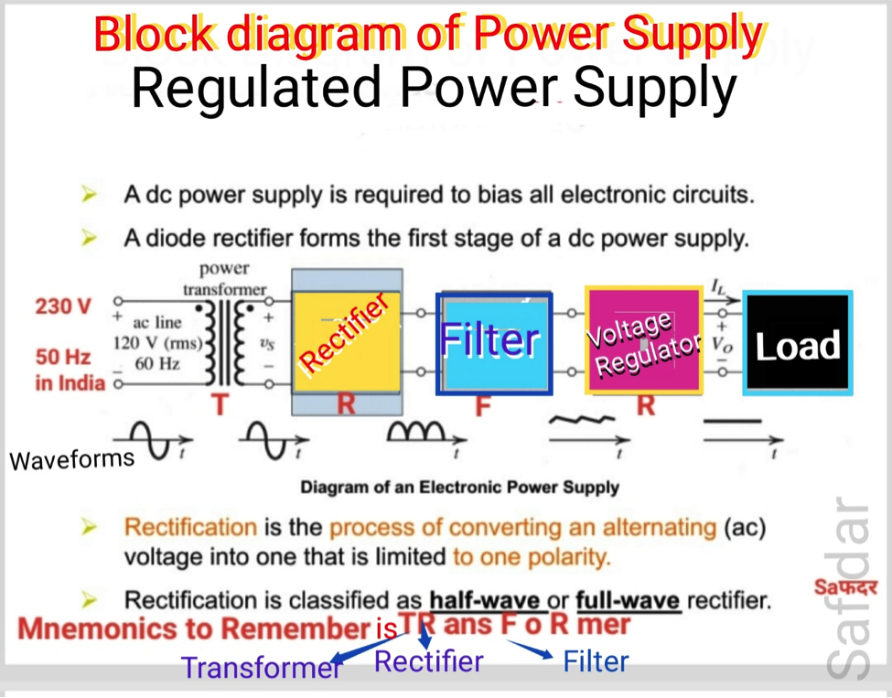
Input signal which goes to the transformer primary winding is a sine wave and its amplitude depends on the country’s electric distribution system (110/220 VAC in many countries .In India 230 V , 50 Hz).
The electrical transformer receives on the primary winding an AC voltage and delivers on the secondary winding a different value AC voltage (a lower one in step-down transformer).
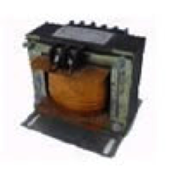
The rectifier bridge transforms the secondary winding AC voltage into a pulsating DC voltage. (Refer block diagram). There are 3 types of rectifiers.1 Half wave and 2 Full wave rectifiers.
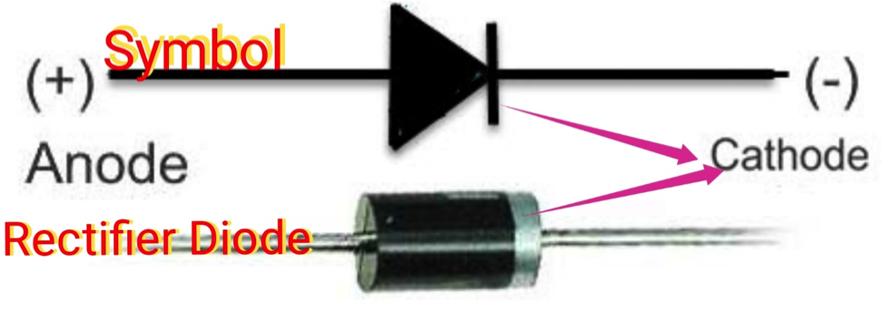
Filter are one or more electrolytic capacitors in parallel that flattens or smoothens the previous wave eliminating the alternating current (AC) component delivered by the rectifier. These capacitors are charged to the maximum voltage value that the rectifier can deliver, and during discharging pulsating signals are removed.
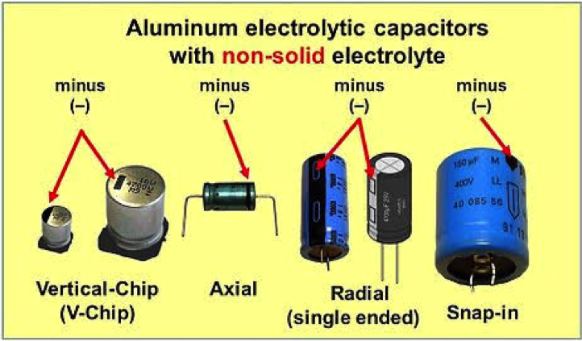
The voltage regulator receives the signal from the filter and delivers a constant voltage regardless of the variations on the load or the input voltage supply. Voltage regulator can be implemented in several ways. It can be using diode or a transistorized voltage regulator or a monolithic voltage regulator.
eg.LM7805 voltage regulator deliver 5V DC output. LM7812 voltage regulator gives 12VDC output. IC 317 give voltage from 1.25 to 37 Voltages.
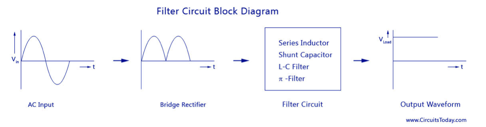
Rectifier circuit Converts a bidirectional sinusoidal ac voltage into its corresponding unidirectional but pulsating dc. Apart from the dc component, this pulsating dc voltage will have unwanted ac components like the components of its supply frequency along with its harmonics (together called ripples). These ripples will be the highest for a half wave rectifier and will reduce further for a full wave rectifier. Such supply is not useful for driving complex electronic circuits. For most supply purposes constant dc voltage is required than the pulsating output of the rectifier. For most applications the supply from a rectifier will make the operation of the circuit poor. If the rectifier output is smoothened and steady and then passed on as the supply voltage, then the overall operation of the circuit becomes better. Thus, the output of the rectifier has to be passed though a filter circuit to filter the ac components.
The filter is a device that allows passing the dc component of the load and blocks the ac component of the rectifier output. Thus the output of the filter circuit will be a steady dc voltage.
The filter circuit can be constructed by the combination of components like capacitors, resistors, and inductors. Inductor is used for its property that it allows only dc components to pass and blocks ac signals. Capacitor is used so as to block the dc and allows ac to pass. All the combinations and their working are explained in detail below. These filters are called passive filters.
The circuit diagram of a full wave rectifier with a series inductor filter is given below.
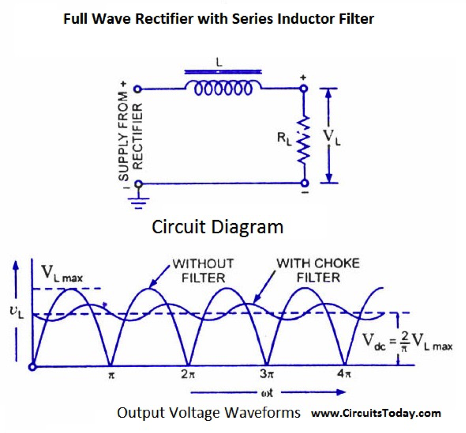
As the name of the filter circuit suggests, the Inductor L is connected in series between the rectifier circuit and the load. The inductor carries the property of opposing the change in current that flows through it.
In other words, the inductor offers high impedance to the ripples and no impedance to the desired dc components. Thus the ripple components will be eliminated. When the rectifier output current increases above a certain value, energy is stored in it in the form of a magnetic field and this energy is given up when the output current falls below the average value. Thus all the sudden changes in current that occurs in the circuit will be smoothened by placing the inductor in series between the rectifier and the load.
The waveform shows the use of inductor in the circuit.
From the circuit, for zero frequency dc voltage, the choke resistance Ri in series with the load resistance RL forms a voltage divider circuit, and thus the dc voltage across the load is
VL/Vdc = RL/(Ri + RL) V L = Vdc x [ RL/(Ri + RL)]
Vdc is the output from a full wave rectifier. In this case, the value of Ri is negligibly small when compared to RL.
XL= ωL = 2π f L
For f= 0, inductive reactance XL is zero. It means no opposition to DC. The effect of higher harmonic voltages can be easily neglected as better filtering for the higher harmonic components take place. This is because of the fact that with the increase in frequency, the reactance of the inductor also increases. It should be noted that a decrease in the value of load resistance or an increase in the value of load current will decrease the amount of ripples in the circuit. So, the series inductor filter is mostly used in cases of high load current or small load resistance. A simple series inductor filter may not be properly used. It is always better to use a shunt capacitor (C) with series inductor (L) to form an LC Filter.
As the name suggests, a capacitor is used as the filter and this high value capacitor is shunted or placed across the load impedance. This capacitor, when placed across a rectifier gets charged and stores the charged energy during the conduction period. When the rectifier is not conducting, this energy charged by the capacitor is delivered back to the load. Through this energy storage and delivery process, the time duration during which the current flows through the load resistor gets increased and the ripples are decreased by a great amount. Thus for the ripple component with a frequency of ‘f’ megahertz, the capacitor ‘C’ will offer a very low impedance. The value of this impedance can be written as:
Shunt Capacitor Impedance = Xc = ωc = 1/2πf.C
For DC, f is zero , hence opposition is infinite., Hence capacitor allows ac and block DC.
Thus the dc components of the input signal along with the few residual ripple components, is only allowed to go through the load resistance RLoad. The high amount of ripple components of current gets bypassed to ground through the capacitor C.
Now let us look at the working of Half-wave rectifier and Full-wave rectifier with Capacitor filters, their output filtered waveform, ripple factor, merits and demerits in detail.
Half-wave Rectifier with Shunt Capacitor Filter
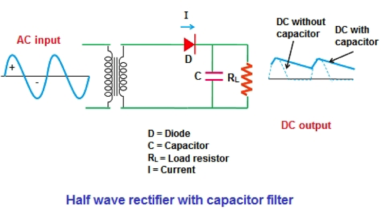
The circuit diagram above shows a half-wave rectifier with a capacitor filter. The filter is applied across the load RLoad. The output of the RLo8ad is VLoad, the current through it is ILoad. The current through the capacitor is Ic.
During the positive half cycle of the input ac voltage, the diode D will be forward biased and thus starts conducting. During this period, the capacitor ‘C’ starts charging to the maximum value of the supply voltage Vp. When the capacitor is fully charged, it holds the charge until the input ac supply to the rectifier reaches the negative half cycle. As soon as the negative half supply is reached, the diode gets reverse biased and thus stops conducting. During the non-conducting period, the capacitor ‘C’ discharges all the stored charges through the output load resistance RLoad. As the voltage across RLoad and the voltage across the capacitor ‘C’ are the same (VLoad = Vc), they decrease exponentially with a time constant (C*RLoad) along the curve of the non-conducting period. This is shown in the graph below.
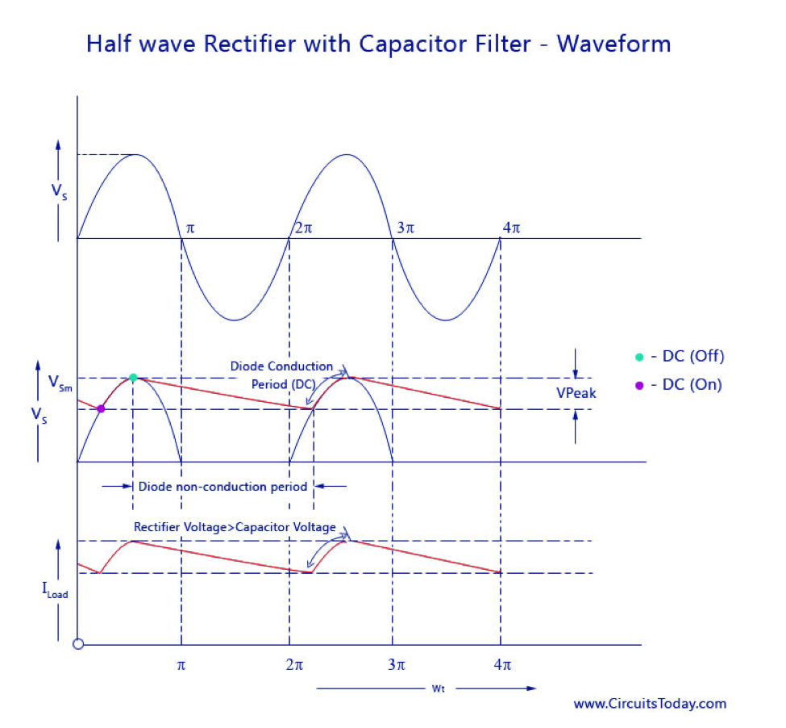
The value of the discharge time constant (R. C) being very large, the capacitor ‘C’ will not have enough time to discharge properly. As soon as the capacitor starts discharging, the time becomes over. Thus the value of RL at the discharge time will also be high and have just a little less value that the output of RL. This is when the positive half cycle repeats again and the diode starts conducting. The condition to be considered at this stage is that the rectified voltage takes value more than the capacitor voltage . When the condition occurs the capacitor starts charging to a value of Vsm. The condition again changes when the negative half cycle comes into pace, and the whole cycle is again repeated to form the output waveform as shown above. The output shows a nearly constant dc voltage at the load and that the output voltage is increased considerably.
Thus, in short:
1. If the value of load resistance is large, the discharge time constant will be of a high value, and thus the capacitors’ time to discharge will get over soon. This lowers the amount of ripples in the output and increases the output voltage. If the load resistance is small, the discharge time constant will be less, and the ripples will be more with decrease in output voltage.
2. The value of the capacitor used plays an important role in determining the output ripples and the average dc level. If the capacitor value is high, the amount of charge it can store will be high and the amount it discharges will be less. Thus the ripples will be less and the average dc level will be high. But, there is a limit on how much capacitance can b increased. If the capacitor value is increased to a very high value, the amount of current required to charge the capacitor to a given voltage will be high. This value of current depends on the manufacturer of the diode and will be surely limited to a certain value. Thus, there is a limit in increasing the capacitor value in a half-wave rectifier shunt capacitor filter circuit.
3. Poor voltage regulation.
Full-wave Rectifier with Shunt Capacitor Filter
The circuit diagram of a full-wave rectifier wit capacitor filter is shown below.
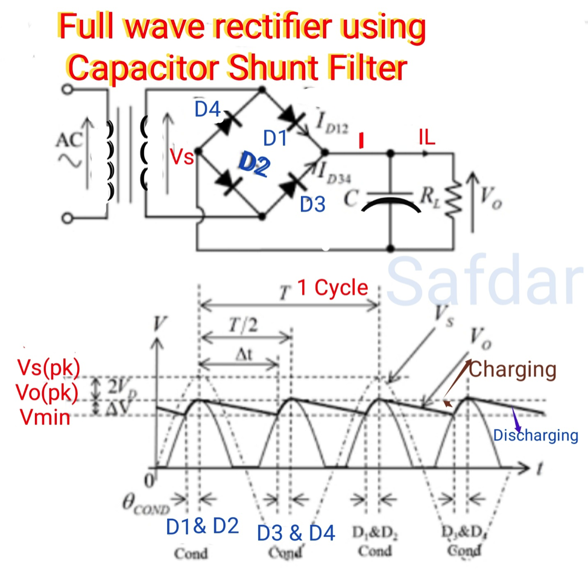
The filter capacitor C is placed across the resistance load RL. The whole working is pretty much similar to that of a half-wave rectifier with shunt capacitor explained above. The only difference is that two pulses of current will charge the capacitor during alternate positive (D1) and negative (D2) half cycles. Similarly capacitor C discharges twice through RL During one full cycle. This is shown in the waveform above.
IL reduces by a smaller amount before the next pulse is received as there are 2 current pulses per cycle. This causes a good reduction in ripples and a further increase in the average dc load current.
In the simple shunt capacitor filter circuit , we have concluded that the capacitor will reduce the ripple voltage, but causes the diode current to increase .This large current may damage the diode and will further cause heating problem and decrease the efficiency of the filter. On the other hand, a simple series inductor reduces both the peak and effective values of the output current and output voltage. Then if we combine both the filter (L and C), a new filter called the L-C filter can be designed which will have a good efficiency, with restricted diode current and enough ripple removal factor .The voltage stabilizing action of shunt capacitor and the current smoothing action of series inductor filter can be combined to form a perfect practical filter circuit.
L-C filters can be of two types: Choke Input L-section Filter and L-C Capacitor input filter
Choke Input filter :
An inductor filter increases the ripple factor with the increase in load current Rload. A capacitor filter has an inversely proportional ripple factor with respect to load resistance. Economically, both inductor filter and capacitor filter are not suitable for high end purpose
L-C inductor input or L-section filter consists of an inductor ‘ L’ connected in series with a half or full wave rectifier and a capacitor ’C’ across the load. This arrangement is also called a choke input filter or L-section filter because it’s shape resembles and inverted L-shape. To increase the smoothing action using the filter circuit, just one L-C circuit will not be enough. Several L-section filters will be arranged to obtain a smooth filtered output. The circuit diagram and smoothened waveform of a Full wave rectifier output is shown below.
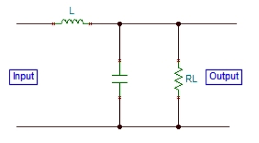
As shown in the circuit diagram above, the inductor L allows the dc to pass but restricts the flow of ac components as its dc resistance is very small and ac impedance is large. After a signal passes through the choke, if there is any fluctuation remaining the current, it will be fully bypassed before it reaches the load by the shunt capacitor because the value of Xc is much smaller than Rload. The number of ripples can be reduced to a great amount by making the value of XL greater than Xc at ripple frequency.
Though the L-C filter has all these advantages, it has now become quite obsolete due the huge size of inductors and its cost of manufacturing. Nowadays, IC voltage regulators are more commonly used along with active filters, that reduce the ripples and keeps the output dc voltage constant.
Capacitor input filter:
When compared to other type of filters, the Π – Filter has some advantages like higher dc voltage and smaller ripple factor. But it also has some disadvantages like poor voltage regulation, high peak diode current, and high peak inverse voltage.
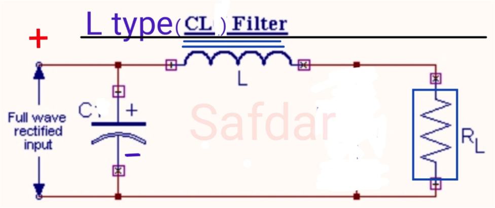
This filter is divided into two – a capacitor filter and a L-section filter. The capacitor C1 does most of the filtering in the circuit and the remaining ripple os removed by the L-section filter (L-C2). C1 is selected to provide very low reactance to the ripple frequency. The voltage regulation is poor for this circuit as the output voltage falls off rapidly with the increase in load current.
Pi Filter is a type of passive filter that consists of mainly three components other than the traditional two-element passive filters. The construction arrangement of all the components creates the shape of the Greek letter Pi (π), thus the name Pi section Filter. In majority, Pi filters are used for Low pass filter application, but another configuration is also possible. The main component of a Pi filter is the capacitor and inductor making it an LC filter. In low pass filter application, Pi filter also called the Capacitor input filter as the capacitor stays across the input side in low pass configuration.
Pi Filter as a Low Pass Filter ( Inductor in series and capacitors are in parallel)
Also called as Capacitor Input Filter. The output from the rectifier is first given to the shunt capacitor C. The rectifier used can be half or full wave and the capacitors are usually electrolytic even though they large in size. In practical applications, the two capacitances are enclosed in a metal container which acts as a common ground for the two capacitors. Circuit diagram and the waveform are given below. The Pi filter is an excellent low pass filter that is much more different than the traditional LC Pi filter. When a Pi filter is designed for a low pass, the output remains stable with a constant-k factor.
The design of a low pass filter using the Pi configuration is pretty straightforward. The Pi Filter circuit consists of two capacitors connected in parallel followed by an inductor in series forming a Pi shape as shown in the image below
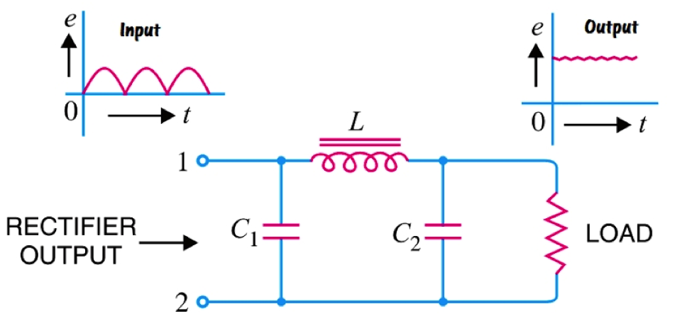
As seen in the above image, it consists of two capacitors which are connected to ground with an in-between series inductor. As this is a low pass filter, it produces high impedance at high frequency and low impedance at low frequency. Thus, it is commonly used in a transmission line to block unwanted high frequencies.
The construction and the component values of the Pi filter calculation can be derived from the below equation to design a Pi Filter for your application.
Pi Filter as a High Pass Filter (Capacitor series ,inductor parallel)
Same as the low pass filter, pi filters can also be configured as a high pass filter. In such a case, the filter blocks the low frequency and allows the high frequency to pass. It is also made using two types of passive components, two inductors, and one capacitor.
In low pass configuration the filter is designed as two capacitors are in parallel with an inductor in between, but in high pass configuration, the position and the quantity of the passive components get exactly the opposite. Instead of a single inductor, here two separate inductors are used with a single capacitor.
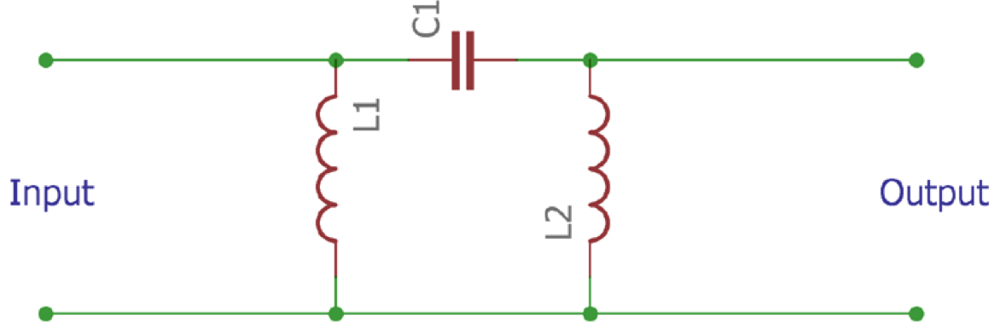
The above Pi Filter circuit image is showing the filter in high pass configuration, and not to mention the construction is also looking like a symbol Pi. The construction and the component values of the Pi filter can be derived from the below equation –
Advantages of the Pi Filter
High output voltage.
Low ripple factor
The last stage/block before load, in a power supply system is the Regulator part.
Voltage regulators circuits are designed to regulate / keep output voltage Vo constant, irrespective of changes in input line voltage or change in output load current.
Need of Voltage Regulator.
Electronic devices are usually made up of diverse electronic components that sometimes operate at different voltage levels. As such, to reliably meet the power requirements of a particular design or that of different components within the design, voltage regulators are usually employed in the power supply unit to regulate the voltage at the main source to what is needed across different sections of the device.
When designing the power supply unit for any device, there is always a ton of decisions to be made. One of those decisions, how be it a difficult one, is the choice of voltage regulators, as they come in different "shapes and sizes" with different "bells and whistles" that make them a great choice when used in one circuit, but a disaster in other circuits.
For a Power supply to produce a constant output voltage, irrespective of the change in input voltage or the change in output load current, there is a need for a voltage regulator.
A voltage regulator is such a device that maintains constant output voltage, instead of any kind of fluctuations in the input voltage being applied or any variations in current, drawn by the load. The following image gives an idea of what a practical regulator looks like.
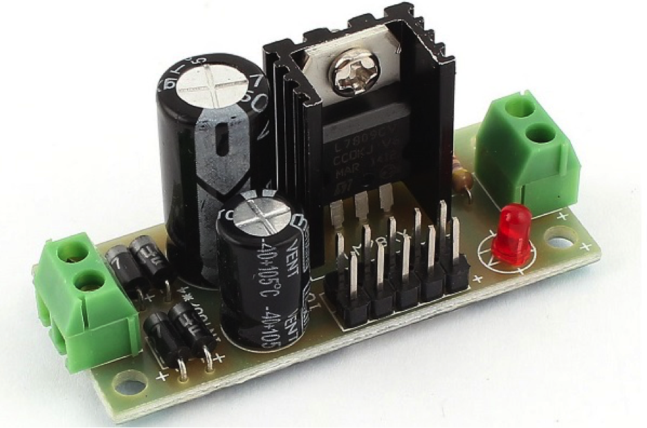
Voltage regulators can be categorized based on different factors like their Type of regulation, Types of connection, Working principle, Applications, Voltages at which they operate, power conversion mechanisms…..
Depending upon the type of regulation, the regulators are mainly divided into two types namely, line and load regulators.
Depending upon the type of connection: There are two type of voltage regulators. They are
The arrangement of them in a circuit will be just as in the following figures.
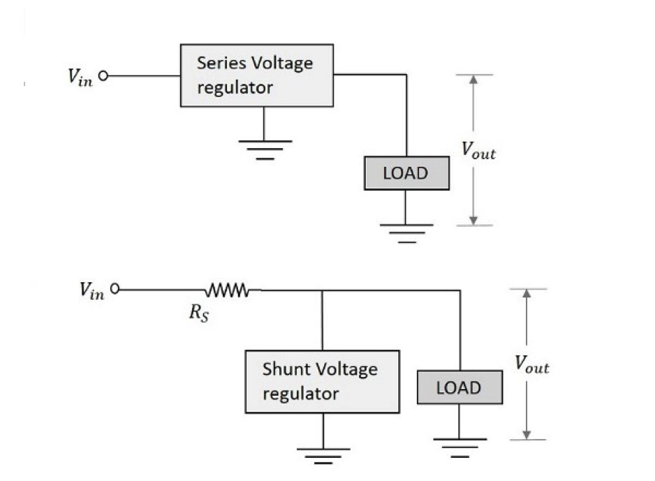
Example: Zener diode voltage regulator for both the types of Regulations viz. Line regulation and Load regulation.
A) Zener Voltage Regulator (without feedback.)
A Zener voltage regulator is one which uses Zener diode for regulating the output voltage.
When the Zener diode is operated in the breakdown or Zener region, the voltage across it is substantially constant for a large change of current through it. This characteristic makes Zener diode a good voltage regulator.
The following figure shows an image of a simple Zener regulator.
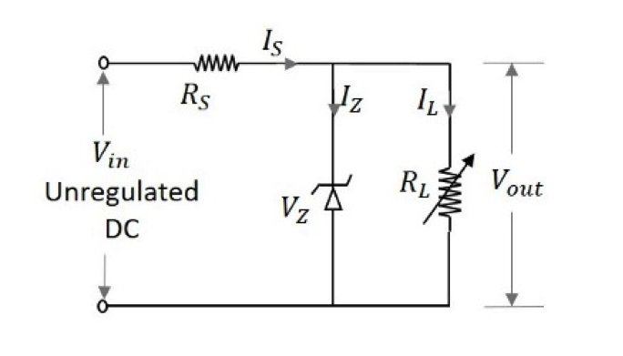
The applied input voltage Vin when increased beyond the Zener voltage Vz, then the Zener diode operates in the breakdown region and maintains constant voltage across the load. The series limiting resistor Rs limits the input current.
Working of Zener Voltage Regulator
The Zener diode maintains the voltage across it constant in spite of load variations and input voltage fluctuations. Hence we can consider 4 cases to understand the working of a Zener voltage regulator.
Case 1 − If the load current IL increases, then the current through the Zener diode IZ decreases in order to maintain the current through the series resistor RS constant. The output voltage Vo depends upon the input voltage Vi and voltage across the series resistor RS.
This is can be written as
Vo=Vin−IsRs from KVL
We have seen in case 1 how Is is kept constant. Therefore, Vo also remains constant.
Case 2 − If the load current IL decreases, then the current through the Zener diode Iz increases, as the current IS through RS series resistor remains constant. Though the current Iz through Zener diode increases it maintains a constant output voltage Vz, which maintains the load voltage constant.
Case 3 − If the input voltage Vi increases, then the current Is through the series resistor Rs increases. This increases the voltage drop across the resistor, i.e. Vs increases. Though the current through Zener diode IZ increases with this, the voltage across Zener diode VZ remains constant, keeping the output load voltage constant.
Case 4 − If the input voltage decreases, the current through the series resistor decreases which makes the current through Zener diode IZIZ decreases. But the Zener diode maintains output voltage constant due to its property.
[ Here Rs take care. Thus Zener with Resistors take cares of 4 possibilities]
Limitations of Zener Voltage Regulator
There are a few limitations for a Zener voltage regulator. They are −
Hence a Zener voltage regulator is considered effective for low voltage applications.
To Overcome these drawbacks, let us go through the other types of voltage regulators, which are made using transistors.
B) Linear voltage regulators with feedback.
Linear voltage regulators use the principles of voltage dividers to transform the voltage at their input to the desired voltage at their output. They employ a feedback loop that automatically varies the resistance in the system to counter the effect of variations in the load impedance and input voltage, all to ensure the output voltage is kept constant.
Typical implementations of linear voltage regulators involve the use a voltage divider circuit with a feedback loop connected to the base of the transistor, driving it as required to ensure consistency in the output voltage.
In situations where the voltage at the input or the load current at the output is too high, the regulators could generate heat levels that may lead to its breakdown. To mitigate this, designers usually employ heat sinks whose size is determined by the amount of current(power) to be drawn through the regulator.
Another point worth talking about for linear regulators, is the need for the voltage at the input to be greater than the voltage at the output by a minimum value called the drop-out voltage.
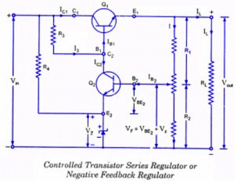
A controlled transistor series regula¬tor is shown in the figure. The circuit is quite similar to that of a simple transistor series voltage regulator except that an additional transistor Q2 is inserted in the circuit. The emitter terminal of this transistor Q2 is connected to the negative terminal of input supply through a Zener diode. The base of this additional transistor is connected to the variable tap of a potentiometer.
This voltage regulator employs the principle of negative feedback to hold the output voltage almost constant despite variations in supply voltage and /or load current. That is why this regulator is also called a negative feedback regulator.
Transistor Q1 the control ele¬ment, is called the Series pass transistor because all the load current flows through it. Zener diode and resistor R4 act Of a reference element. The voltage divider (or potentiometer) consisting of resistors R1 and R2 samples the output voltage and de-livers a negative feedback voltage to the base of transistor Q2 and this feedback voltage (VF = VBE + VZ) controls the collector current of tran¬sistor Q2.
Operation:
Suppose the output voltage increases (due to any rea¬son), the voltage across R2 is also increased as it is part of the output circuit. This causes an increase in voltage (VBE2 + Vz ). As a result IB2 and also Ic2, increases. Assuming I3 relatively constant, IB decreases. Decrease in base current of transistor Q1 causes the increase in collector-emitter resist¬ance of transistor Q1. This causes an increase in V^ thereby off-setting the increase in output voltage. Thus output voltage remains constant. Reverse happens should the output voltage decrease.
The voltage V2 provided by the potential divider R1-R2 must be equal to the sum of the base-emitter voltage of transistor Q2 and the Zener diode. That is
VBE2 + Vz = V2 = R2 / (R1 + R2) * Vout
Vout = (1 + R1/R2) (VBE2 + Vz) = Af (VBE2 + Vz)
Thus the regulated output voltage is equal to the closed-loop gain multiplied by the sum of Zener voltage and base-emitter voltage of transistor Q2 (the sensing element).
Like emitter follower regulator this regulator also has the drawback of excessive power dissipation. Due to this high power dissipation output of the power supply is limited to 30-40 V, as safe value of VCE is 50 V.
Another drawback of this regulator is that it has no overload/short-circuit protection.
The figure shows the functional block diagram of basic three terminal IC regulator.
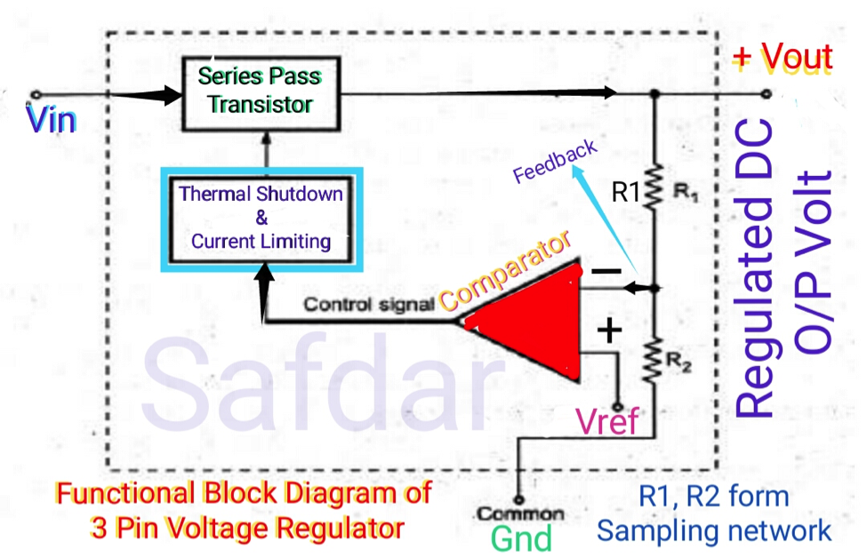
This is basically a series voltage regulator circuit. A part of output voltage is taken with the help of potential divider formed by R1 and R2. This is compared with reference voltage, Vref internally generated with the help of Zener diode.
After comparison, a control signal is generated which is applied through protective circuit to the series pass transistor working as control element. This element works as a variable resistance. The control signal adjusts the control element in such a way that output voltage remains constantThermal shutdown means that the chip will automatically turn itself off if the internaltemperature exceeds, typically, 175°C. The current limiting circuit will protect the chip fromexcessive load current. Because of the thermal shutdown and current limiting, the IC voltageregulator chip is almost indestructible.
Some other types of popular IC Regulators are : 78xx (e.g., L7805(5v), L7809(9V)) series.
Pros and Cons of the LM7805 linear voltage regulator
Although they feature a more complex design and require more companion components to function, switching voltage regulators are super-efficient regulators used in scenarios where power loss, as in linear regulators, cannot be condoned/accepted.
The voltage regulation mechanism in switching voltage regulators involves rapidly switching an element connected in series with an energy storage component (capacitor or inductor) to periodically interrupt the flow of current and transform the voltage from one value to the other. How this is done depends on the control signal from a feedback mechanism like the one employed in linear regulators.
Unlike in linear voltage regulators, the switching element is either in a fully conducting or switched-off state. It dissipates no power and allows the regulator to attain a high level of efficiency beyond that of the linear regulators.
A basic implementation of switching voltage regulator makes use of a "pass transistor" operated either at its cut-off or saturated state, as the switching element. When the pass transistor is in its cut-off state, no current flows through it, as such no power is dissipated, but when it's in the saturated state, a negligible voltage drop appears across it, accompanied by the dissipation of a small amount of power, with maximum current being forwarded to the load. As a result of the switching action and the energy saved during the cut-off state, the efficiency of a switched regulators is usually northwards of 70 %.
The switching and PWM based control gives quite a lot of flexibility that allows switching voltage regulators to work in different modes and exist in various types, including:
1. Buck switching voltage regulators: Buck switching regulators, also known as step-down regulators, convert a high voltage at their input terminals to a lower voltage at their output terminal. This operation is like that of linear regulators except for the fact that the buck regulators operate at a higher degree of efficiency. An image illustrating the arrangement of components in buck regulators is provided below.
2. Boost switching voltage regulators: Boost switching regulators, also known as step-up regulators, can convert low voltages at their input to a higher voltage at their output. Their configuration is one of the major differences between linear regulators and switching regulators as no regulation is experienced if the voltage at the input of linear voltage regulators is greater than the voltage required at their output. A circuit illustrating boost switching voltage regulators is provided below.
3. Buck/boost switching voltage regulator: A buck/boost regulator combines the characteristics of the two regulators above. It can provide a fixed output voltage irrespective of the difference (+ or -) between the input and output voltage. They are very useful in battery applications where the voltage at the input, which may be higher than the output voltage at the beginning, decreases to a level below the output voltage over time. A circuit illustrating buck/boost switching regulator is provided below:
Pros: Depending on your application, the benefit of switching regulators may outweigh their disadvantages. Some of the advantages include:
Cons: As efficient and perfect as switching voltage regulators appear, they have shortcomings, some of which include:
When the power supply is included with the switching regulator from converting electrical power from one form to another form with necessary characteristics is called switch mode power supply. This power supply is used to attain regulated DC o/p voltage from the DC i/p voltage or unregulated AC.
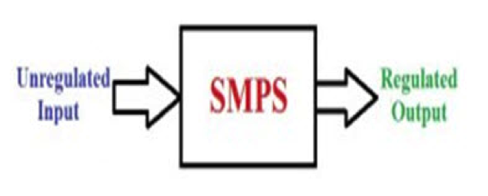
SMPS is a complicated circuit like other power supplies, it supplies from a source to the loads. SMPS is crucial for different electrical and electronic appliances which consumes power and also for designing electronic projects.
SMPS, are becoming common place and have replaced in most cases the traditional linear ac-to-dc power supplies as a way to cut power consumption, reduce heat dissipation, as well as size and weight. Switch-mode power supplies can now be found in most PC’s, power amplifiers, TV’s, dc motor drives, etc., and just about anything that requires a highly efficient supply as switch-mode power supplies are increasingly becoming a much more mature technology.
By definition, a switch mode power supply (SMPS) is a type of power supply that uses semiconductor switching techniques, rather than standard linear methods to provide the required output voltage. The basic switching converter consists of a power switching stage and a control circuit. The power switching stage performs the power conversion from the circuits input voltage, VIN to its output voltage, VOUT which includes output filtering.
The major advantage of the switch mode power supply is its higher efficiency, compared to standard linear regulators, and this is achieved by internally switching a transistor (or power MOSFET) between its “ON” state (saturated) and its “OFF” state (cut-off), both of which produces lower power dissipation. This means that when the switching transistor is fully “ON” and conducting current, the voltage drop across it is at its minimal value, and when the transistor is fully “OFF” there is no current flow through it. So the transistor is acting like an ideal switch.
As a result, unlike linear regulators which only offer step-down voltage regulation, a switch mode power supply, can offer step-down, step-up and negation of the input voltage using one or more of the three basic switch mode circuit topologies: Buck, Boost and Buck-Boost. This refers to how the transistor switch, inductor, and smoothing capacitor are connected within the basic circuit.
Buck Switch Mode Power Supply
The Buck switching regulator is a type of switch mode power supply circuit that is designed to efficiently reduce DC voltage from a higher voltage to a lower one, that is it subtracts or “Bucks” the supply voltage, thereby reducing the voltage available at the output terminals without changing the polarity. In other words, the buck switching regulator is a step-down regulator circuit, so for example a buck converter can convert say, +12 volts to +5 volts.
The buck switching regulator is a DC-to-DC converter and one of the simplest and most popular type of switching regulator. When used within a switch mode power supply configuration, the buck switching regulator uses a series transistor or power MOSFET (ideally an insulated gate bipolar transistor, or IGBT) as its main switching device as shown below.
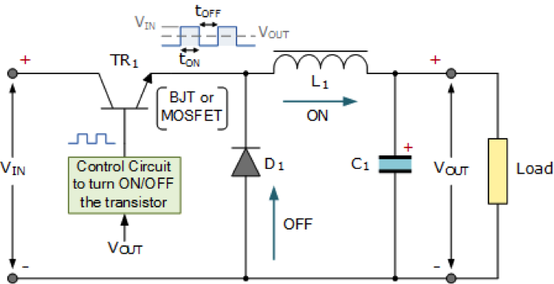
We can see that the basic circuit configuration for a buck converter is a series transistor switch, TR1 with an associated drive circuit that keeps the output voltage as close to the desired level as possible, a diode, D1, an inductor, L1 and a smoothing capacitor, C1. The buck converter has two operating modes, depending on if the switching transistor TR1 is turned “ON” or “OFF”.
When the transistor is biased “ON” (switch closed), diode D1 becomes reverse biased and the input voltage, VIN causes a current to flow through the inductor to the connected load at the output, charging up the capacitor, C1. As a changing current flows through the inductor coil, it produces a back-emf which opposes the flow of current, according to Faraday’s law, until it reaches a steady state creating a magnetic field around the inductor, L1. This situation continues indefinitely as long as TR1 is closed.
When transistor TR1 is turned “OFF” (switch open) by the controlling circuitry, the input voltage is instantly disconnected from the emitter circuit causing the magnetic field around the inductor to collapse inducing a reverse voltage across the inductor. This reverse voltage causes the diode to become forward biased, so the stored energy in the inductors magnetic field forces current to continue to flow through the load in the same direction, and return back through diode.
Then the inductor, L1 returns its stored energy back to the load acting like a source and supplying current until all the inductor’s energy is returned to the circuit or until the transistor switch closes again, whichever comes first. At the same time the capacitor also discharges supplying current to the load. The combination of the inductor and capacitor forms an LC filter smoothing out any ripple created by the switching action of the transistor.
Therefore, when the transistor solid state switch is closed, current is supplied from the supply, and when the transistor switch is open, current is supplied by the inductor. Note that the current flowing through the inductor is always in the same direction, either directly from the supply or via the diode but obviously at different times within the switching cycle.
As the transistor switch is being continuously closed and opened, the average output voltage value will therefore be related to the duty cycle, D which is defined as the conduction time of the transistor switch during one full switching cycle. If VIN is the supply voltage, and the “ON” and “OFF” times for the transistor switch are defined as: tON and tOFF, then the output voltage VOUT is given as:
Buck Converter Duty Cycle
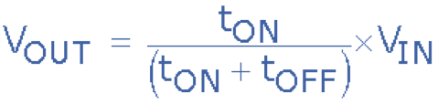
The buck converters duty cycle can also be defined as:
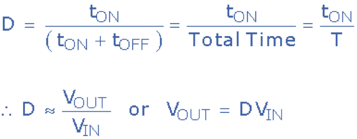
So the larger the duty cycle, the higher the average DC output voltage from the switch mode power supply. From this we can also see that the output voltage will always be lower than the input voltage since the duty cycle, D can never reach one (unity) resulting in a step-down voltage regulator. Voltage regulation is obtained by varying the duty cycle and with high switching speeds, up to 200kHz, smaller components can be used thereby greatly reducing a switch mode power supply’s size and weight.
Another advantage of the buck converter is that the inductor-capacitor (LC) arrangement provides very good filtering of the inductor current. Ideally the buck converter should be operated in a continuous switching mode so that the inductor current never falls to zero. With ideal components, that is zero voltage drop and switching losses in the “ON” state, the ideal buck converter could have efficiencies as high as 100%.
As well as the step-down buck switching regulator for the basic design of a switch mode power supply, there is another operation of the fundamental switching regulator that acts as a step-up voltage regulator called the Boost Converter.